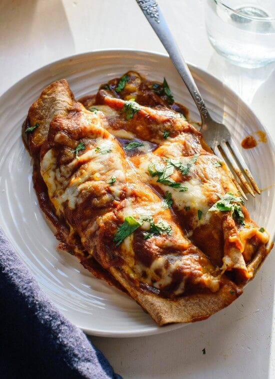

Bean and Cheese Enchiladas

Your favorite mexican baked dish made easy at home. Corn tortillas
filled with cheesy refried beans, topped with enchilada sauce and
more cheese, and baked to toasty cheesy perfection.
Ingredients
- Cooking Spray
- 2 (16 ounce) cans reefried beans
- 2 cups shredded Mexican cheese blend, divided
- 1/2 cup chopped onion
- 12 small corn tortillas
- 2 (10 ounce) cans red enchilada sauce
Steps
-
Preheat oven to 350 degrees F (175 degrees C).
Spray a 9x13-inch casserole dish with cooking spray.
-
Mix refried beans, 1 1/2 cup Mexican cheese blend,
and onion in a microwave-safe bowl; heat in microwave
until cheese is melted, about 1 minute.
-
Stack tortillas, 3 at a time, on a microwave-safe plate;
heat in microwave until warmed, about 30 seconds.
Repeat with remaining tortillas.
-
Pour enough enchilada sauce onto a small plate to cover.
Quickly dip both sides of each tortilla in enchilada sauce.
Spoon bean filling down the middle of each dipped tortilla
and wrap tortilla around filling. Arrange filled tortillas
in the prepared baking dish. Pour remaining enchilada sauce
over filled tortillas and sprinkle remaining cheese over sauce
layer. Cover dish with aluminum foil.
-
Bake in the preheated oven until sauce is bubbling and cheese
is melted, 35 and 40 minutes.